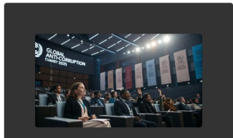
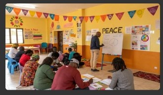
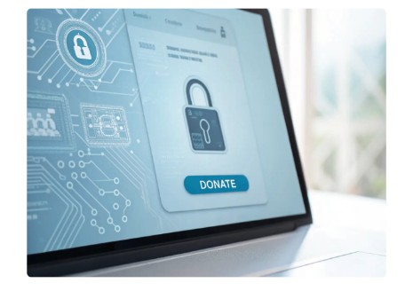

عن اللجنة الدولية للأمن والسلام ومكافحة الفساد
تأسست عام ٢٠٢٠، ونحن ملتزمون بتعزيز الاستقرار والنزاهة العالميين. رسالتنا هي تعزيز السلام ومكافحة الفساد من خلال التعاون والمشاركة المجتمعية.
رسالتنا وقيمنا
نسعى جاهدين لتعزيز الاستقرار والنزاهة العالميين من خلال تعزيز السلام ومكافحة الفساد. تهدف مبادراتنا التعاونية إلى تمكين المجتمعات وإحداث تغيير مستدام.
- النزاهة
- التعاون
- الشفافية
- التمكين
- الاستدامة
تاريخنا
أُنشئت اللجنة الدولية للأمن والسلام ومكافحة الفساد لمعالجة قضايا الأمن والفساد العالمية. ومنذ عام ٢٠٢٠، قمنا ببناء شراكات وتطوير برامج فعّالة عالميًا.
الموارد
- التقارير السنوية
- منشورات بحثية
- وثائق السياسة
- مواد التدريب
- موارد الوسائط المتعددة
اتصل بنا
للاستفسارات، يُرجى التواصل معنا عبر البريد الإلكتروني info@icspac.org.
يمكنكم التواصل معنا عبر الهاتف على الرقم +1 (555) 123-4567.
نرحب بزوارنا الكرام في مكتبنا الكائن في ١٢٣ شارع السلام، شمال غرب، واشنطن العاصمة، ٢٠٠٠١، الولايات المتحدة الأمريكية.
تسجيل الدخول
ليس لديك حساب؟ اضغط هنا للتسجيل